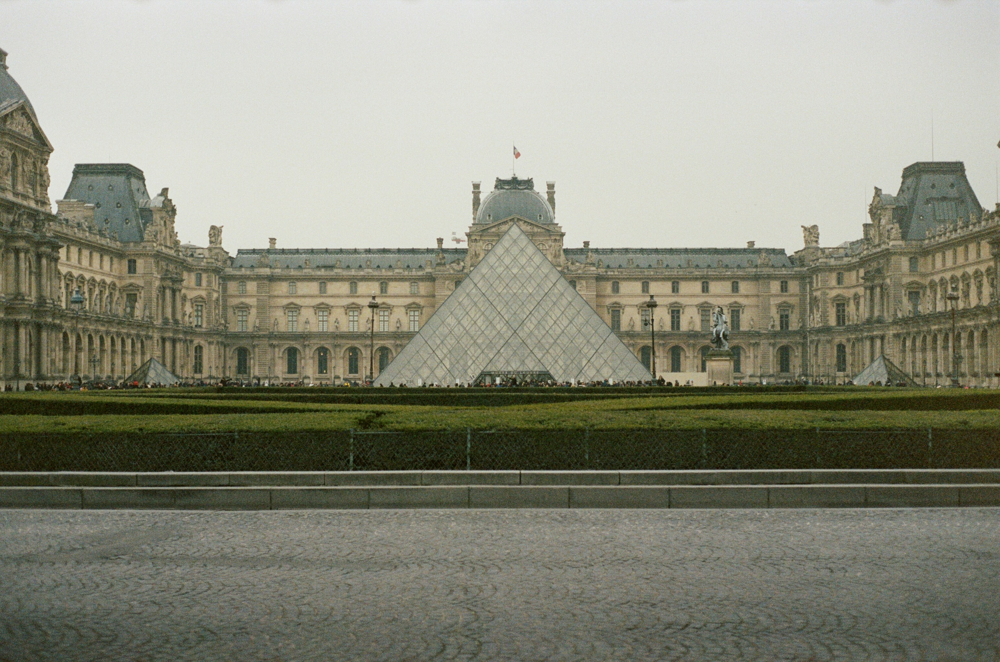
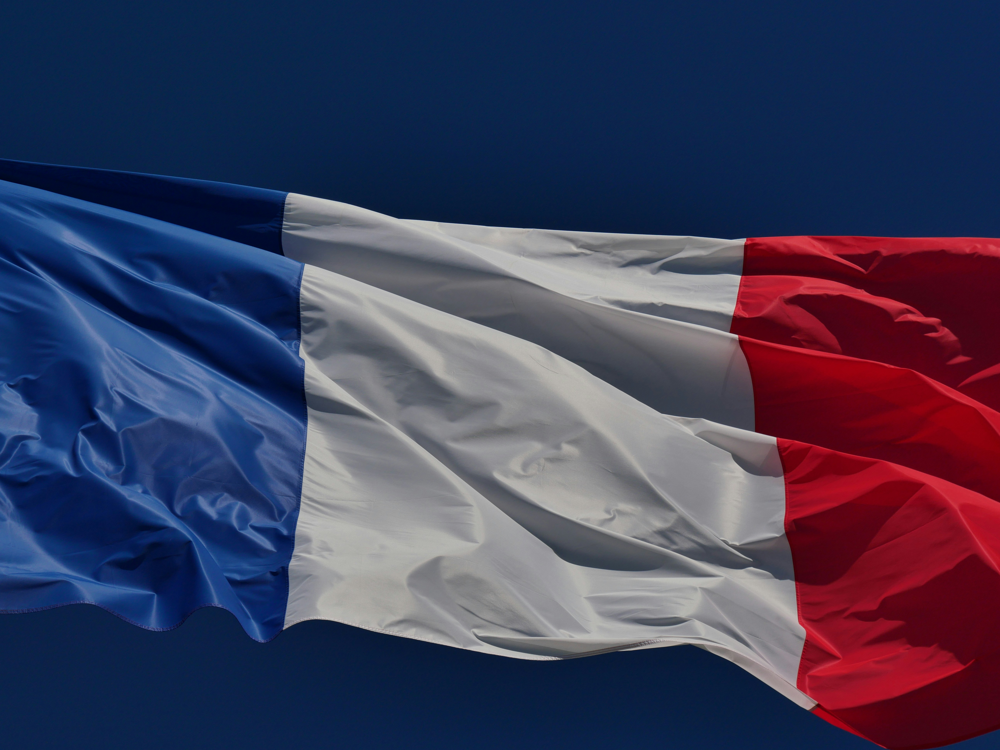

França: O Coração da Europa
História
A história da França começa com os povos celtas conhecidos como gauleses, que habitavam a região antes da conquista pelo Império Romano no século I a.C. Sob domínio romano, a Gália (nome antigo da França) tornou-se uma importante província do império, com grandes cidades como Lutécia (atual Paris). Após a queda do Império Romano do Ocidente, tribos germânicas invadiram a região, e os francos, liderados por Clóvis, fundaram o Reino Franco, origem do nome "França".
Durante a Idade Média, a França se consolidou como um dos principais reinos da Europa. Destacam-se eventos como a ascensão dos reis capetíngios, a Guerra dos Cem Anos contra a Inglaterra e o papel marcante de figuras como Joana d'Arc. A sociedade era fortemente feudal e ligada à Igreja Católica, que exercia grande influência sobre a política e a cultura.
No final do século XVIII, a Revolução Francesa (1789) mudou radicalmente o país e influenciou o mundo. O povo se rebelou contra os excessos da monarquia e da aristocracia, derrubando o rei Luís XVI e instaurando uma república baseada nos ideais de liberdade, igualdade e fraternidade. Esse período foi seguido por instabilidade política e o surgimento de Napoleão Bonaparte, que se tornou imperador e liderou conquistas por toda a Europa.Após a queda de Napoleão, a França passou por várias mudanças de regime: voltou à monarquia, teve novas repúblicas e enfrentou grandes conflitos como a Primeira e a Segunda Guerras Mundiais.
Durante a ocupação nazista na Segunda Guerra, surgiu a resistência francesa, e o país foi libertado em 1944 com ajuda dos Aliados.
No século XX, a França tornou-se uma república estável e uma das principais potências mundiais. Participou da fundação da União Europeia e hoje é conhecida por sua forte cultura democrática, suas contribuições artísticas e intelectuais, além de ser uma referência em moda, gastronomia e turismo. A história da França é marcada por lutas, transformações sociais profundas e um legado cultural que influenciou todo o mundo.
Descubra mais sobre a França

Cultura
A cultura francesa é uma das mais influentes do mundo, conhecida por sua sofisticação, tradição e inovação em diversas áreas como arte, moda, gastronomia, filosofia e literatura. Desde a Idade Média, a França tem sido um centro cultural importante na Europa, produzindo grandes pensadores, artistas e movimentos culturais que marcaram a história da humanidade.
Na gastronomia, a França é referência mundial. A culinária francesa é reconhecida pela sua diversidade, qualidade e refinamento. Queijos, vinhos, pães e doces típicos como croissants, macarons e crème brûlée fazem parte do cotidiano francês e são apreciados internacionalmente. O ritual das refeições é levado a sério: comer bem é uma expressão do estilo de vida francês.
A arte também ocupa lugar central na cultura do país. Museus como o Louvre, em Paris, guardam obras-primas como a Mona Lisa, de Leonardo da Vinci. A França foi berço de movimentos artísticos importantes, como o impressionismo, com artistas como Monet, Renoir e Degas. Além disso, o país valoriza profundamente o cinema e realiza um dos festivais mais prestigiados do mundo: o Festival de Cannes.
No campo da moda, a França é considerada a capital global do estilo. Paris abriga algumas das maiores grifes do mundo, como Chanel, Dior e Louis Vuitton, e realiza anualmente a Paris Fashion Week, que dita tendências no cenário internacional. A elegância e o minimalismo são marcas da moda francesa.
A cultura francesa também valoriza muito a língua e a educação. O francês é visto como um símbolo de identidade nacional, sendo promovido ativamente tanto dentro quanto fora do país. A literatura francesa é rica e diversa, com nomes como Victor Hugo, Marcel Proust, Simone de Beauvoir e Albert Camus. A França investe fortemente em arte, cultura e preservação de seu patrimônio, mantendo viva uma herança que inspira gerações no mundo todo.
Descubra mais sobre a França

Idioma
A língua francesa, uma das mais prestigiadas do mundo, pertence ao grupo das línguas românicas, originadas do latim vulgar. Ela é falada por cerca de 300 milhões de pessoas, principalmente na França, mas também em várias partes do mundo, como no Canadá, na Bélgica, na Suíça, em países africanos e em territórios no Pacífico. O francês é a língua oficial de 29 países e é uma das línguas de trabalho da ONU, da União Europeia e de diversas organizações internacionais.
O francês é conhecido por sua musicalidade e beleza, o que lhe confere um charme especial. Sua gramática, complexa e rigorosa, possui várias regras e exceções que a tornam única. O sistema de conjugação verbal, por exemplo, pode ser desafiador, mas ao mesmo tempo é uma das características que conferem expressividade à língua. Além disso, a língua francesa é rica em vocabulário e possui muitas palavras que não têm tradução direta em outras línguas, o que a torna ainda mais fascinante.
A língua francesa tem grande importância cultural. Ela é a língua da literatura clássica, com autores renomados como Victor Hugo, Marcel Proust, Albert Camus, e Simone de Beauvoir. A língua também tem sido fundamental na filosofia, especialmente no século XX, com figuras como Jean-Paul Sartre e Michel Foucault, cujas obras influenciaram o pensamento contemporâneo.
Embora o francês seja a língua oficial da França, o país possui uma grande diversidade linguística. Muitas línguas regionais, como o bretão, o occitano, o corso e o alsaciano, ainda são faladas em várias regiões. No entanto, o francês moderno tem sido a língua predominante, especialmente devido às políticas linguísticas que promovem seu uso em escolas, governamentais e na mídia. No entanto, a coexistência dessas línguas regionais é um reflexo da rica diversidade cultural da França.
No cenário global, o francês continua a ser uma língua de prestígio. Além de ser amplamente falado em comunidades francófonas, o francês é amplamente ensinado como segunda língua em escolas ao redor do mundo. A língua também desempenha um papel central na diplomacia, nas artes, na moda e na culinária, consolidando a sua posição como uma língua de comunicação internacional e um símbolo de sofisticação e cultura.
O idioma oficial é o francês, falado em várias partes do mundo. Veja abaixo como escrever "Olá, tudo bem?" em francês:
Bonjour, ça va ?
Descubra mais sobre a França

Curiosidades
A França é um país repleto de curiosidades fascinantes que refletem sua rica história e cultura. Uma das mais conhecidas é a Torre Eiffel, um dos monumentos mais icônicos do mundo. Embora tenha sido originalmente criticada por sua estrutura metálica na época de sua construção, a torre se tornou um símbolo global de Paris e é visitada por milhões de turistas todos os anos. Curiosamente, ela foi projetada para ser desmontada após a Exposição Universal de 1889, mas acabou se tornando permanente devido ao seu sucesso e importância para a ciência, servindo como uma torre de rádio.
Outra curiosidade sobre a França é que o francês é uma das línguas mais estudadas no mundo. Estima-se que mais de 220 milhões de pessoas falem francês em todo o mundo, e o idioma é a segunda língua mais ensinada após o inglês. Isso é um reflexo do impacto cultural e diplomático da França, que tem uma longa história de influência nas artes, na ciência e na política mundial.
A gastronomia francesa é mundialmente famosa e a França tem mais de 400 tipos de queijo diferentes. A variedade de queijos e vinhos é impressionante, com cada região do país possuindo suas próprias especialidades. A cidade de Lyon, por exemplo, é considerada a capital gastronômica do país. Além disso, o croissant, um dos pães mais famosos do mundo, tem origens na Áustria, mas foi popularizado na França, especialmente em Paris, onde é um item indispensável nos cafés da manhã.
Na França, há uma tradição única e divertida chamada "Le Tour de France", uma das competições de ciclismo mais antigas e prestigiadas do mundo. A corrida, que acontece anualmente desde 1903, atrai milhares de espectadores e ciclistas de todo o mundo, percorrendo as belíssimas paisagens francesas, incluindo as desafiadoras montanhas dos Alpes e os campos dourados da Provença.
Uma curiosidade peculiar sobre a França é o amor dos franceses pelo "bref" (breve). O país é conhecido por seu estilo de vida “sem pressa”, onde o almoço é uma pausa longa e muitas vezes social, ao contrário de outros países onde a refeição é rápida. Isso reflete a importância do tempo de qualidade e das boas conversas, que são parte essencial da cultura francesa. A ideia de tomar o tempo necessário para apreciar uma refeição reflete não só o prazer da comida, mas também o valor do convívio social.
Descubra mais sobre a França

Dados Gerais
| População |
Área |
Idioma |
| 67 milhões |
551.695 km² |
Francês |
| Capital: Paris |
Moeda: Euro (€) |
| Continente: Europa |
Ver novamente